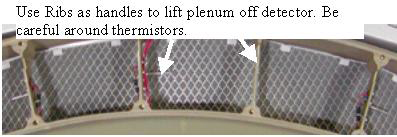

The filter assembly is attached to the rear of the plenum. The back side of the filter is an EMC screen that can be damaged if poked or hit blocking air flow. Make sure the plenum is set on a flat clean surface and not on top of any small objects that can poke the EMC screen.
Illustration 4: Air Plenum
